Consider the following four types of edges produced by the
depth-first search on a graph .
.
• Tree edges.
• Forward edges.
• Back edges.
• Cross edges.
Now, consider a chart with column and row labels WHITE, GRAY and BLACK label for a depth-first search of a directed graph.
|
WHITE |
GRAY |
BLACK |
|
|
WHITE |
Tree edges Forward edges Back edges Cross edges |
Cross edges Back edges |
Cross edges |
|
GRAY |
Forward edges Tree edges |
Tree edges Back edges Forward edges |
Tree edges Forward edges Cross edges |
|
BLACK |
|
Back edges Cross edges |
Tree edges Forward edges Back edges Cross edges |

Now, consider a chart with column and row labels WHITE, GRAY and BLACK label with depth-first search of an undirected graph.
|
WHITE |
GRAY |
BLACK |
|
|
WHITE |
Tree edges Back edges |
Tree edges Back edges |
|
|
GRAY |
Tree edges Back edges |
Tree edges Back edges |
Tree edges Back edges |
|
BLACK |
|
Tree edges Back edges |
Tree edges Back edges |
Now consider the edge, which is defined in both the above tables:
Tree edges:
• The, is defined
as a tree edge if  was
discovered by searching the
was
discovered by searching the
• WHITE color is used to indicate the tree edge.
Forward edges:
• It is defined as, “all those non-tree, which are
used to connect a vertex to a
descendent vertex in a given
depth-first tree”.
• BLACK color is used to indicate the forward edge.
Back edges:
• It is defined as, “all those, which are
used to connect a vertex to an
ancestor vertex in a given
depth-first tree”.
• A self-loop considered here, which may exists in the directed graph, to be back edges.
• GRAY color is used to indicate the tree edge.
Cross edges:
• All the other edges, except the above three defined edges are known as Cross edges.
• The cross edges, in the same depth-first tree, can go between the vertices as long as one vertex is not an ancestor of another.
• BLACK color is used to indicate the forward edge.
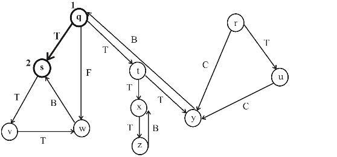
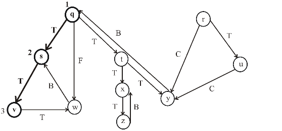
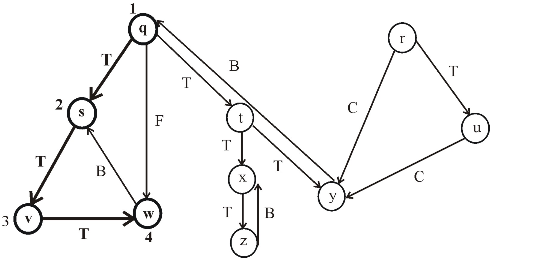
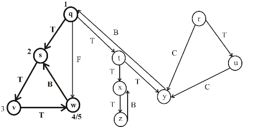
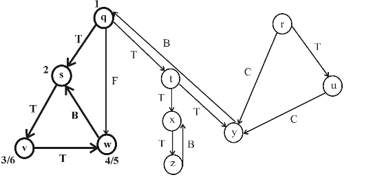
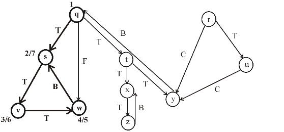
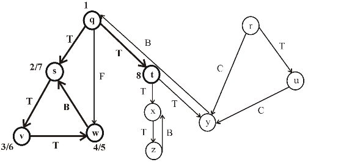
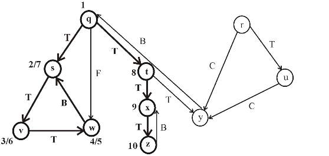
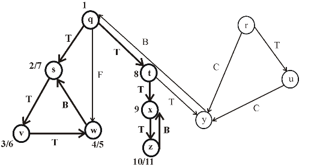
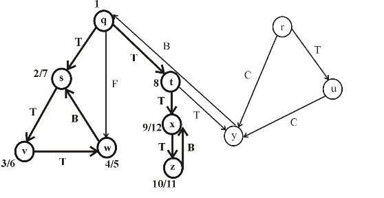
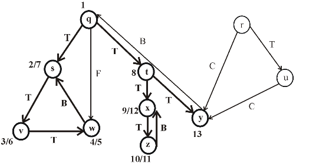
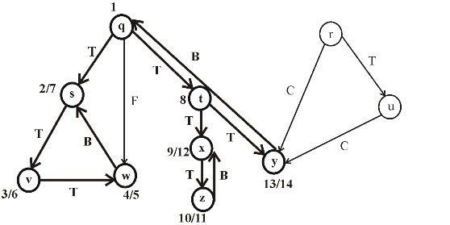
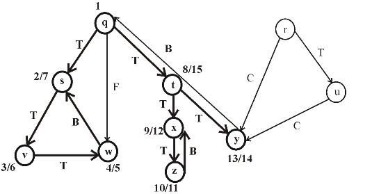
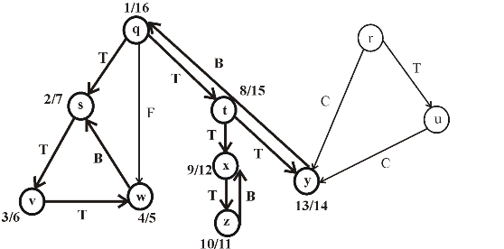
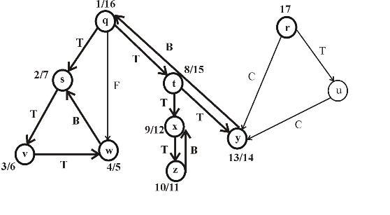
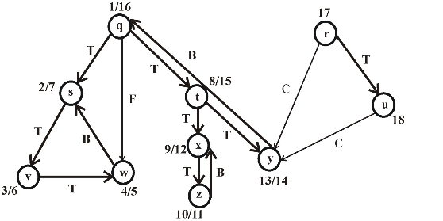
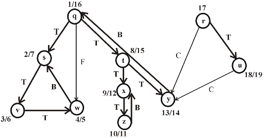
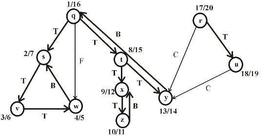
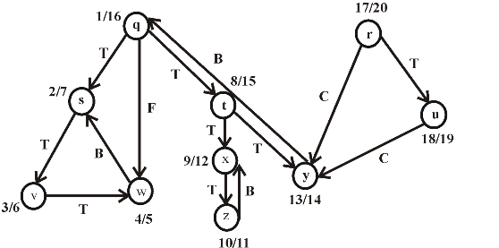
Consider the following figure, which is the final result of the depth first search (DFS) applied on a directed graph. Each node in the given graph is time stamped with discovery times.
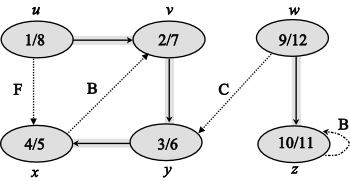
Figure (1)
After applying DFS on a directed graph, the visiting and finishing times of nodes can be represented using a parenthesis structure. This is an important property of DFS. Parenthesis theorem is used to represent the parenthesis structure of a graph.
Now, apply the Theorem 22.7 (or Parenthesis theorem), on the given graph, then the parenthesized structure of the above given graph will be as follows.
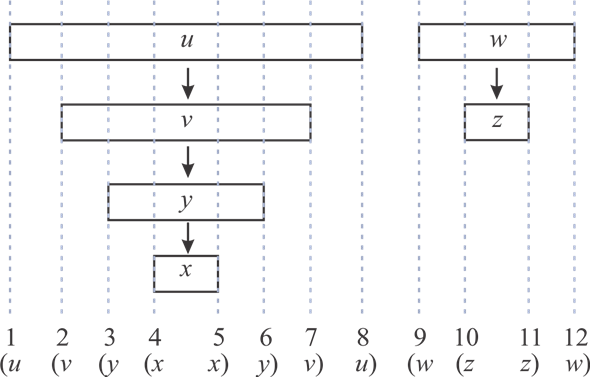
Figure (2)
• An interval in the figure represents the discovery time and finishing time of a vertex. Parenthesis “(” represents the discovery time of a vertex and parenthesis “)” represents finishing time of a vertex.
• A rectangle represents the duration of discovering and finishing times of the vertex.
• If two intervals are overlapped, that is one interval is nested within other, the vertex corresponding to the smaller interval is a descendent of the vertex corresponding to the larger.
The following is the redrawn graph of the given graph. The new graph is drawn with forward and back edges. The edges drawn down wards are the forward edges and edges drawn up words are back edges:
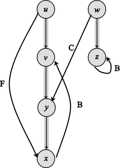
Figure (2)
DFS (Depth First search)
Depth first search means to search “deeper” in the graph. In this search, we find out the vertex V which is discovered recently and all the undiscovered edges from the vertex V. Once we come across all the V’s edges that have been discovered, we backtrack to find edges apart from the vertex from which V was discovered. We continue this process until all the vertices which are reachable from the source vertex are discovered.DFS –VISIT: Depth first search colors vertices to indicate their state during the search. Each vertex is white in its initial state, is grayed when discovered and blackened when finished, that is when its adjacency list is completely examined.
Algorithm:
DFS-VISIT ( G,u )
1. time=time+1
//white vertex u has been discovered
2. u.d=time
3. u.color=GRAY
//explore edge (u, v)
4. for each v G.adj.u
5. if v.color==WHITE
6. v.=u
7. DFS-VISIT (G, u)
// Blacken u when it is finished
8. u.color=BLACK
9. time=time+1
10. u.f=time
Here,
u.d - discovery time of u.
u.color - color of u.
v.color - Color of v.
v. = predecessor of v.
u.f - finishing time of u.So, according to the color state described above, if line 3 (u.color=GRAY) is removed for storing of single bit color, then there will be infinite recursion, as the white color will be called each time; because which vertex is discovered will not be known by that time. But if the line number 8 (u.color=BLACK) instead of 3 will be removed, and then it is possible for a single bit of color storing in DFS visit.
The main reason behind it, is that line 3 and 8 both are using the same variable (u.color).
This algorithm is processed after the all vertices are painted in white color in a graph. Then, one by one every vertex converts into gray color and at last, all are in black color. This represents that all vertices have now been visited using the concept of DFS.
So, here, removing line 3 in the above algorithm does not result in affecting the result because it does not affect the discover time and the finish time. Similarly, line 8 in the algorithm also does not have any affect. These colors are used only to analyze the graph in a better way.

In an undirected graph, classifying an edge as tree edge or back edge according to or encountered first during the depth first search is equivalent to ordering of the four types in classification scheme.
Depth First Search is an algorithm for a graph or tree for the traversing and searching vertex in a graph by using backtracking method.
In the undirected graph if depth first search is used for traversal or searching of vertices then the edges of the graph are classified in four categories and these are:
1. Tree Edges:
These are the edgesin which v is just uncovered or founded.
2. Back Edge:
Back edges are those which formed because of backtracking that is an edge is discovered as that is v is processed before u and is the parent of u.
3. Forward edges:
These are the edgesof the graph which a vertex u is connected with a descendent v.
4. Cross edges:
These are the edges of the graph other than defined above. They can be at the same level in the same depth first tree if one vertex is not the parent of the other vertex or the edges in different depth first trees.
Tree edges and back edges can be differentiated as for an edge it is tree edge if v is just discovered through this edge while back edges are those edges in which v is the parent node of vertex u.
So the edges can be defined on the basis of encountering of their nodes in the traversal of tree or graph that is if a node encounters first then it is the parent of the node that encounter after. Thus in the undirected graph classification of edges whether they are tree edges or the back edges can be done by both the methods in the same manner either by their encounter in depth first tree or by ordering or classification scheme of edges.
The DFS (Depth first search) algorithm calls DFS-VISIT on each vertex that is not visited yet. DFS-VISIT is called recursively to visit adjacent vertices of a node. This recursion can be avoided by using a stack.
Thus, consider the following stack operations:
• This
operation is used to pushes the node into the
stack.
• : This operation returns the top of the stackand also removes the top element.
• : This operation returns the top of the stack without removing it.
• : It returns true if stack is empty, otherwise returns false.
Consider the following DFS procedure, using a stack to eliminate recursion:
DFS(G)
//for loop is used to iterate for all the vertices
1. for every vertex
//Set the color of the vertex white
2.
//Set the predecessor of the vertex to NIL
3.
4. time = 0
5. for every vertex
6. if u.color = = WHITE
7.
//Define the procedure DFS
//Initially set the stack as empty
1.
// Now, set the color of the vertex GRAY
2.
//Perform the  operation to
push the vertex or node into the
operation to
push the vertex or node into the
// stack STK
3.
//While loop runs continuously, until the stack is empty
4. while
5. 
6. if t.color = =WHITE
7. time = time + 1
8. t.d =time
9. t.color = GRAY
// flag to check whether all adjacent vertices of t are explored or not
10. Flag = 0
11. for v
12. if
13.
14.
15. Flag=1
// if all adjacent nodes are marked gray or black
16. If Flag = = 0
17. t =
18. t.color = BLACK
19. time = time + 1
20. t.f = time
Explanation of the above DFS procedure:
• To eliminate recursion, stack is used and operations related to stack are mentioned above.
• In line 1 of DFS, the for loop is used to initialize the color and predecessor attributes of every node in a graph.
• To do so, the color of each node is set to white and predecessor is set to NIL using line 2 and 3.
• In line 4, the global time variable is set to 0.
• In line 5-7, for each vertex that is white, is called
• In the line 1 of , an empty stack is created. Here p is the starting vertex to visit.
• In line 2, the color of the starting vertex(p) is turned to grey and this vertex is pushed into the stack in line 3.
• After that, the while loop continues till there are elements in a stack.
• Now the top of the stack(t) is retrieved. If this vertex is not visited yet, then its discover time t.d is set to time and its color is set to GRAY.
• In line 10, a Boolean value, Flag, is initialized to 0. This is used to know whether all the adjacent vertices of t are visited or not.
• In line 11-15, all the adjacent vertices of t that are not discovered yet are pushed into the stack. If there exist such vertices of t, Flag is updated as 1 at line 15.
• If there are no adjacent vertices of t that are to be discovered, then Flag remains 0.
• In line 16-20, the Flag value is checked. If the Flag is 0(it means , there are no further adjacent vertices of t that are to be discovered), the color of t is turned black and also it is removed from the stack. Also the finished time is updated.
DFS (Depth First Search)
A directed graph here refers to a graph in which the direction is specified. Depth first search means to search “deeper” in the graph. In this search we find out the vertex V which is discovered recently and all the undiscovered edges from the vertex V. Once we come across all the V’s edges that have been discovered, we backtrack to find edges apart from the vertex from which V was discovered. We continue this process until all the vertices which are reachable from the source vertex are discovered.
Depth first search colors vertices to indicate their state during the search. Each vertex is white in its initial state, is grayed when discovered and blackened when finished, that is when its adjacency list is completely examined.
Adjacency list: It is the list obtained by seeing the vertex which is adjacent to the given vertex. Its adjacency list representation is:
a U V
U a
V none
The depth –first forest produced is:
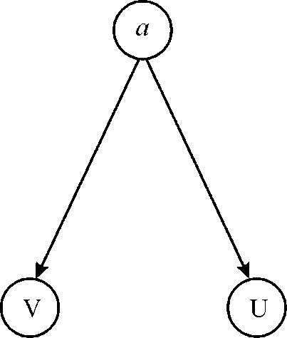
Here, a is the source vertex. We start DFS search from the source vertex a ,then we goes to vertex U which has no other neighbor than a .Hence U is finished, we next goes to vertex V ,after V is finished we terminate.
|
Vertices |
Discovered time |
Finishing time |
|
a |
1 |
6 |
|
U |
2 |
3 |
|
V |
4 |
5 |
There is a path in G from to U and U.d=2 < V.d =4.Hence, vertex U is not the successor of V, so V is not the descendant of U. Hence, the conjecture contradicts.
DFS (Depth First search)
A directed graph here refers to a graph in which the direction is specified. Depth first search means to search “deeper” in the graph. In this search we find out the vertex V which is discovered recently and all the undiscovered edges from the vertex V. Once we come across all the V’s edges that have been discovered, we backtrack to find edges apart from the vertex from which V was discovered. We continue this process until all the vertices which are reachable from the source vertex are discovered.
Here u and v are the two vertices in the directed graph and we have to give an example such that there is a path from U to V and any DFS results in V.d<=U.f.
V.d = time of the discovery of the vertex V.
U.f = time of the finishing of the vertex U.
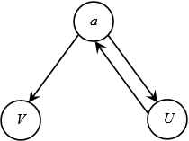
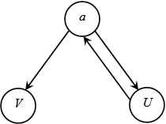
Adjacency list: It is the list obtained by seeing the vertex which is adjacent to the given vertex. Its adjacency list representation is:
a U V
U a
V none
Here a is the source vertex. We start DFS search from the source vertex a, then we goes to vertex U which has no other neighbor than a. Hence, U is finished we next goes to vertex V, after V is finished we terminate.
|
Vertices |
Discovered time |
Finishing time |
|
a |
1 |
6 |
|
U |
2 |
3 |
|
V |
4 |
5 |
Here, finishing time of U is 3 that is less than the discovery time of V that is 4. Yet there is a path from U to V. So, the conjecture is not valid.
Modified Depth first Search:
Consider the following modified depth-first search pseudo code to display the all edges of a directed graph G, along with its edge types.
DFS-show-edge ( G )
1. for each vertex
// Set the initial color of the vertex as white.
2. u.color = WHITE
3. u.π = NIL
//set the global variable time to zero.
4. time = 0
// check for each vertex in graph.
5. for each vertex
// Check discovered vertex color is white, then visit it by DFS-VISIT-show-edge
// (G, u)
6. if u.color == WHITE
// visit the discovered white vertex
7. DFS-VISIT-show-edge (G, u)
Explanation:
• DFS process starts with initializing the graph with the vertices. From line one to three, color of all vertices is set to white. And initially set the attributes π to nil.
• Now in the next line set the time counter to keep track discover and finishing times of vertices.
• From the line five to line seven, if a vertex with white color is found, then visit it with the help of DFS-VISIT-show-edge (G, u).
Modified Pseudocode for DFS-VISIT-show-edge ( G, u ): To visit the each discovered node in graph which is of white color, the following pseudocode for DFS-VISIT-show-edge (G, u) function is used. This function called every time for discovered node with white color and u will be the root.
DFS-VISIT-show-edge (G, u)
// increase time by 1 as the vertex u is visited
1. time = time + 1
// assign the discovery time to u vertex and record it as new time
2. u.d = time
// now paint the u vertex as Grey
3. u.color = GRAY
// now explore the edge (u, v) and visit recursively v.
4. for each v belongs to G.Adj[u]
// check color for v.
5. if v.color == WHITE
// if it is white, store the predecessor value
6. v.π = u
// display edge (u, v) as tree edge
7. print “(u, v)|tree edge “
// visit the vertex v.
8. DFS-VISIT-Show-edge (G, v)
// if vertex color is Grey, display edge (u, v)| as back edge
9. elseif v.color == GREY
10. print “(u, v)|back edge “
// in case of black color
11. else
// v.color == BLACK
// check condition for forward edge and cross edge
12. if u.d < v.d
13. print “(u, v)|forward edge “
14. else
15. print “(u, v)|cross edge”
// Set black color of u vertex if it is discovered or finished
16. u.color = BLACK
17. time = time + 1
// now record the finishing time in u.f
18. u.f = time
Explanation:
• DFS-VISIT-show-edge (G, u) is called when a vertex is of white color is found.
• First line of this code is used to increment the time counter. Line two is used to record the new time value because the u.d discovery time and line three provide the color grey.
• Fourth line used to explore the (u, v) edge. Check color for v in line five.
• If vertex v is white, store the predecessor value in line six.
• If the color of vertex is white that means it is a tree edge as it is the node which is discovered and has to be included in Tree. Now display the edge as tree edge in line seven.
• If vertex color is Grey, display edge (u, v)| as back edge in line eight to ten, because the node is already visited earlier and hence this edge is considered as back edge.
• From line nine to fifteen check for the color black and display it as forward or cross edge accordingly. Finally set the color Black if it is finished.
• Now increase the global counter and record the finishing time in u.f.
Modifications required for undirected graph:
For the undirected graph, the code form line fourth to line eight in DFS-VISIT-show-edge (G, u) are required to be modified.
Replace the line 4-8 with the following code:
// examine each vertex _ adjacent to u
1. for each v belongs to G.Adj[u]
2. if v.color == WHITE
3. v.π = u
4. print “(u,v)|tree edge “
5. DFS-VISIT-directed-show-edge (G, v)
6. else
// display edge (u, v) as back edge
7. print “(u,v)|back edge “
Explanation:
• According to the theorem 22.10 theorem provided in the text book, every edge in an undirected graph is either a back edge or tree edge. Thus the code is modified as above.
• Tree edge will be displayed from line two to line four. And back edge will be displayed in other case defined in line five to line seven.